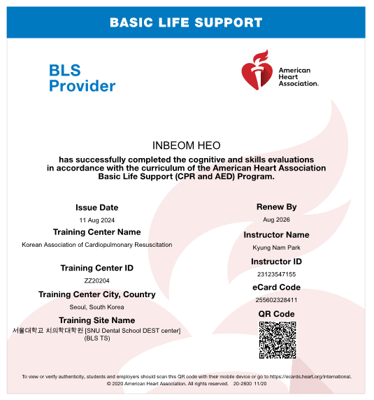
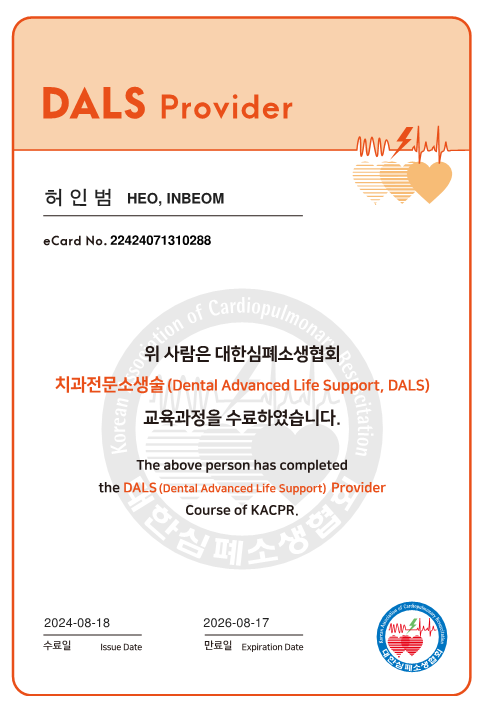

수면치료는 잠을 자는 듯한
편안한 상태에서 치료가 이루어지므로
치과치료에 대한 공포와 두려움을
해소할 수 있는 치료입니다.
의식하 진정요법은 전신마취와 달리 환자의 자발적 호흡이 가능하며,
환자의 상태를 실시간으로 모니터링하여 안전하고 체계적인 수면 치과 치료를 약속합니다.
환자의 상태를 실시간으로 모니터링하여 안전하고 체계적인 수면 치과 치료를 약속합니다.


안전하고 체계적인 수면치과 진료 시스템
환자분의 안전을 최우선으로 생각합니다.
임플라인치과 수면치료의 특별함
수면치료에 대한 깊은 이해도와
풍부한 임상경험을 갖춘 의료진
보건복지부 인증 통합치의학과 전문의 허인범 대표원장이 치료 전
과정에서 직접 모니터링하여 안심하고 치과 치료를 받으실 수 있습니다.

응급상황에 대비한
체계적인 안전 시스템 구축
미국심폐소생협회 주관 심폐소생술 자격증(BLS, Basic Life Support) 및 치과전문과정(DALS, Dental Advanced Life Support)을 수료한 의료진이 상주하며, 활력징후를 실시간 모니터링하여 만일의 안전사고에 완벽 대비하고 있습니다.


통증과 두려움
최소화 치료 시스템
치과 치료에 대한 공포심이 심한 환자, 다수의 임플란트
식립이 필요한 환자, 전신질환자 등에게 편안한 치료를 제공합니다.
수면치료 과정
STEP 01 정밀 진단 및 1:1 환자 맞춤 상담
첨단 디지털 전문 장비를 통해 환자의 구강상태를 정확하게 분석하고, 병력 청취를 통해 수면치료 적합 여부를 판단합니다.
STEP 02 치료 당일, 수면 유도 및 마취 진행
수면 유도제를 투여하여 환자를 가수면 상태로 유도한 후, 치료 부위에 부분 마취를 진행하여 통증을 최소화합니다.
STEP 03 실시간 환자 모니터링 시스템 수면치과 치료 실시
환자의 호흡, 맥박, 산소포화도 등을 실시간으로 철저하게 모니터링하며 안전하게 치과 치료를 진행합니다.
STEP 04 수면치료 마무리 및 회복
성공적인 치과 치료가 끝난 후, 환자가 충분히 안전하게 회복할 수 있도록 약물 투여를 조절합니다.
STEP 05 충분한 휴식 후 귀가
독립된 회복실에서 비몽사몽한 기운이 없어질 때까지 충분한 안정과 휴식을 취한 뒤 안전하게 귀가합니다.